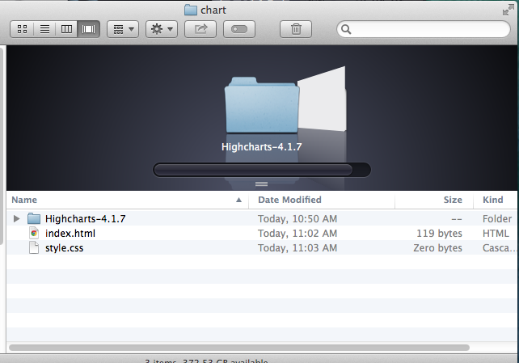
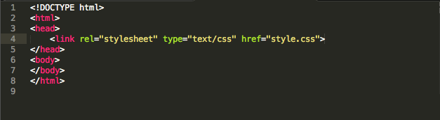
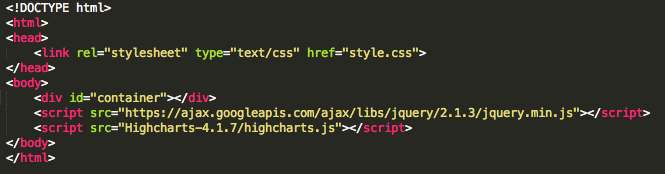
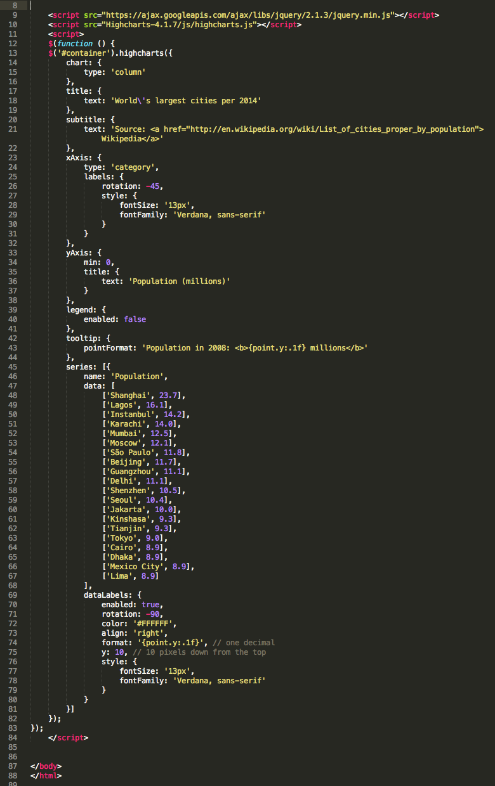
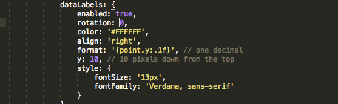

Introduction to Javascript Libraries and Highcharts
(352/652 Class 12)
Today we dip our toes into the water of programming, by learning some very basic javascript using a pre-written package of code a "library" called Highcharts -- custom javascript, jquery, css and html -- that will help us make some charts.
Intro to Javascript Libraries
Libraries are packages of code that make it easy to do complicated things without having to write a bunch of custom code yourself.
- Build basic charts and graphs (Highcharts)
- Build INSANE charts and graphs (D3)
- Pop up maps and text and other information on a page in time with news video! (Popcorn.js)
- Full screen background video (Bigvideo.js)
- My favorite: Bacon Text Wrap (Bacon.js)
You can find many more examples here and here and here. Or by googling "jquery library" and the thing you want it to do.
Many developers host their libraries on Github.
The one we'll be using today is called Highcharts.
Step-by-Step with Highcharts
Today we'll be learning how to work with Highcharts to build this simple column chart showing population of the world's largest cities:
Along the way, we'll learn how to use libraries, use script tags and modify a javascript function.
1. Download Highcharts and Create Structure
Download the latest version of Highcharts (NOT highstock or highmap)
Unzip the package and put it in a folder called "chart" on your desktop.
Create a file called index.html in which you put the normal page structure of an HTML document. Create an empty stylesheet called style.css and link to it from your HTML document.
Your folder should look like this:
And your HTML document should look like this:
If we think about the process of building our chart as the process of building a car, we've just built the frame for the car, put on the wheels and doors, but we haven't yet put in the engine that makes it go. That comes next.
2. Linking HTML Document to Highcharts Library and jQuery
Next, we need to link our HTML document to the Highcharts library we've downloaded.
This will look similar to linking to a stylesheet, but instead of "link" we'll use a new kind of tag called "script."
We'll also need to link our HTML document to something called jQuery, which is another library that makes it easy to do a lot of things with Javascript.
The Highcharts is "dependent" on the jQuery library, which means it won't work without it.
We should think of these as the engines of the car we're building, the thing under the hood that makes the car go.
And just like a car engine, these libraries are VERY complicated. Take a look at the code for the jQuery library. Now take a look at the code for the highcharts library.
This is just the first few lines of highcharts.js:

Unless you're an experienced programmer, I'm guessing that looks like Greek to you.
But luckily, we don't need to know exactly what that stuff means to use Highcharts, in much the same way that we don't need to know how exactly an engine works -- or be able to build one -- in order to drive a car. We just need to know that it goes under the hood and if it isn't there the car won't work.
We put javascript files at the bottom of the page right before the closing body tag, generally, because they're slow to load sometimes and putting them at the bottom speeds up page performance.
Add the links to jQuery and highcharts to your document. This is what your index.html file should look like now:

Note: I'm using a version of jQuery hosted by Google Code, so it's linked out to another site. Also, please note that Highcharts-4.1.7 was current when I wrote this tutorial, so the path to the Highcharts folder I downloaded is Highcharts-4.1.7/highcharts.js. If your folder is named something different (i.e. Highcharts-4.2.6), you should change your path accordingtly.
3. Add an Empty Box to Hold the Highchart
If we were building a chart with HTML and CSS, we might have dozens of DIVs on our page, with different classes and ID names, and corresponding information in our stylesheet.
But we're going to use Javascript to build the chart, so all we need is an empty container DIV and, in our stylesheet, tell it how wide to be and how tall.
So, make your index.html file look like this:
And make you stylesheet look like this:

If you open your index.html file in a browser right now, you should see nothing, because we haven't told it what kind of chart to draw.
Keeping with our car analogy, we've now built the frame; dropped in the engine; and by creating a container DIV we've typed a destination into our GPS. But we haven't yet given it any gas, or turned the wheel to get it to that destination. We'll do that next.
3. Write a Function to Tell Highcharts What Kind of Chart to Make
Next, we write a function that tells Highcharts what kind of chart to draw.
A function, in any program, is simply a set of step-by-step instructions to the computer to do something specific.
You're not going to write a function from scratch today. You're going to copy one someone has already written and modify it a little bit. In our car analogy, think of this as using directions someone has already written to get somewhere, instead of coming up with your own route on the fly.
Remember, we're building this chart:
This chart is an example from the Highcharts website, a pre-written function. If you visit this page, and click the "view options" button you can see the function.
Copy the code in the pop-up window in its entirety.
In your index.html document, below the Highcharts and jQuery script tags, write an opening script tag and a closing script tag like so:

Between the open script tag and the closing script tag, paste in the function you copied from the Highcharts website like so:
Refresh your index.html file in a browser and you should see the chart!
Functions Explained
Again, a function is just a set of instructions to the computer to do something specific.
The important part of this function:
1 $(function () {
2 $('#container').highcharts({
3 Specifics to this chart
4 });
5 });
- Line one declares a function is coming.
- Line two says "where you see a DIV with an ID of container, draw a highchart with all of the following attributes in line 3."
- Line three is, in your function, dozens of lines, containing things like datalabels, title, data, et cetera.
- Line four closes $('#container').highcharts ({ from line 2.
- And line five closes $(function () { from line one.
The use of #container is important because we've told highcharts to draw a highchart inside of a DIV on our page with an ID of "container". But if we changed our DIV with an ID of "popchart", our function would instead read instead:
1 $(function () {
2 $('#popchart').highcharts({
3 Specifics to this chart
4 });
5 });
This will be important to pay attention to when you ultimately have multiple charts on the page.
Customizing Highcharts
Down the road, you'll be able to write your own functions from scratch.
For now, whenever you set out to build a Highchart, I'd suggest looking throught the list of examples of chart types and finding the closest one to your final product and use it as a starting point.
From there, you can set about changing, adding or takign away attributes to make your chart look like you want. The Highcharts API reference has a long list of attributes you can change and examples.
For example, let's say I wanted to change this from a column chart -- with vertical bars -- to a bar chart -- with horizontal bars and make the numbers on top of the bars rotated the right direction, like so:
I would need to make two small changes from the existing code.
First, I'd change the chart type from this:

to this:

Then, I'd change the orientation of the datalabels by changing the datalabels rotation from -90:

To 0:
There are hundreds of things you can tweak, by looking at the Highcharts API reference. Most of them come with a link to example code on a site called JS fiddle, where you can look at them in action. Here's one example, of how to change background color.
Warning: Commas and curly brackets matter! If you get one out of place, the whole thing will just stop working. Be careful, make small changes and test before making another change.
After you make these two changes, you're ready to upload to your server.
Submission of Assignment
1. Download germany world cup folder to your desktop.
2. Copy day-four folder and rename it as day-five.
3. Copy chart folder into day-five.
4. Upload day-five folder to server.
5. Submit link as answer to in-class assignment. It should be YourSite.com/germany-world-cup/day-five/chart/index.html